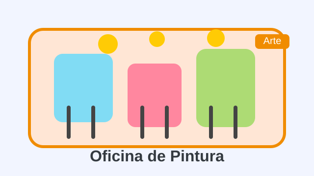
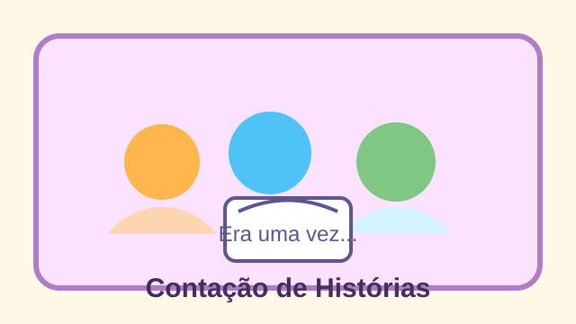

Durante a semana que antecedeu o Dia das Crianças, nossa escola viveu uma maratona de atividades repleta de cor, música e muita imaginação. Oficinas de arte, contação de histórias e jogos cooperativos transformaram salas, corredores e pátios em espaços de descobertas, aproximando estudantes, professores e famílias. A programação foi construída de forma colaborativa para garantir que cada turma pudesse celebrar com alegria e, ao mesmo tempo, aprofundar aprendizagens importantes para o desenvolvimento integral das crianças.

Logo na segunda-feira, os pequenos cientistas do 3º ano se aventuraram em experiências com bolhas de sabão gigantes. Entre risadas e observações curiosas, aprenderam sobre a importância da água e da preservação do meio ambiente. Já os alunos do 5º ano montaram uma exposição de brinquedos sustentáveis feitos com materiais reciclados, reforçando o compromisso da escola com a responsabilidade socioambiental.
A música também ganhou destaque com a roda de cantigas, na qual estudantes de diferentes turmas apresentaram arranjos construídos em sala de aula. O repertório incluiu clássicos da infância brasileira, cantos indígenas e composições autorais que nasceram das experiências vividas durante o semestre.
Brincar para aprender
Professores relataram que as atividades lúdicas potencializaram a participação de crianças que, durante as aulas tradicionais, demonstravam maior timidez. Ao experimentar novas linguagens, elas passaram a expressar sentimentos, ideias e opiniões com mais confiança. O circuito motor, montado no ginásio, incentivou a consciência corporal, enquanto os jogos matemáticos colaborativos estimularam o raciocínio lógico de forma descontraída.

A culminância aconteceu na sexta-feira, com a Feira das Descobertas. Cada turma apresentou um painel destacando o que aprendeu, os desafios enfrentados e as memórias favoritas da semana. Famílias foram convidadas para visitar as salas, experimentar os jogos e assistir às apresentações artísticas. O clima de entusiasmo mostrou que a aprendizagem pode (e deve!) caminhar lado a lado com o brincar.
Solidariedade em foco
Ao longo da semana, os estudantes arrecadaram livros infantis para a biblioteca comunitária do bairro. A campanha resultou em mais de 300 exemplares, que serão catalogados e emprestados para crianças da região. Segundo a diretora Maria Rita Fernandes, a ação fortaleceu o senso de pertencimento e responsabilidade social: “Nossos alunos compreenderam que fazer o bem também é uma forma de celebrar o Dia das Crianças”.
A equipe pedagógica reforçou que iniciativas como a Semana da Criança integram o currículo e dialogam com os projetos desenvolvidos ao longo do ano. A experiência reforça a importância de escutar as crianças, valorizar suas culturas e reconhecer suas múltiplas formas de aprender.